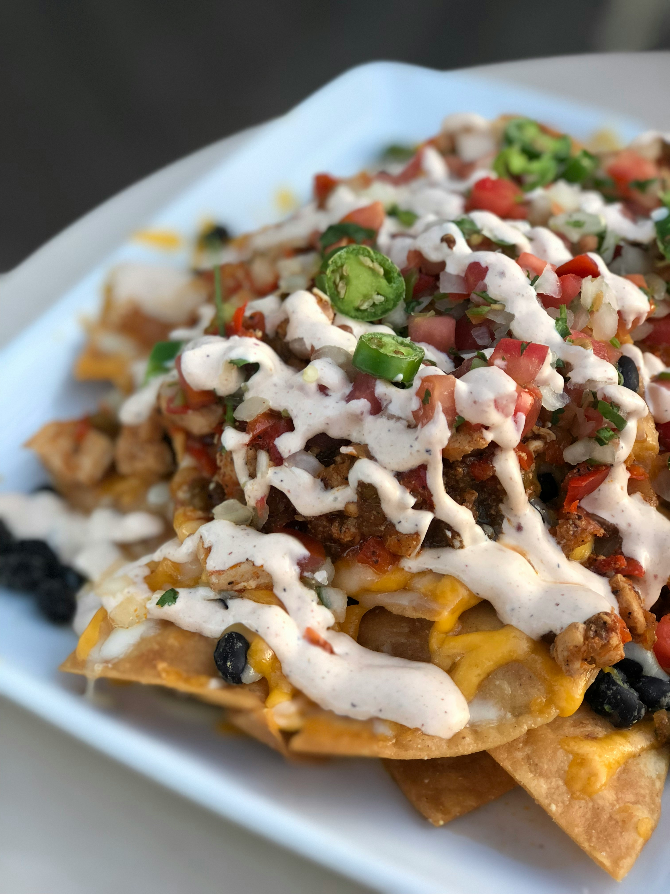

Nachos

Description
Nachos are a popular Tex-Mex food made of crunchy fried corn tortilla chips topped with
melted cheese, meat, vegetables, and garnishes.
Ingredients
For the spice mix:
- 2 tablespoons chili powder
- 1 1/2 teaspoons kosher salt
- 1 teaspoon granulated garlic
- 1 teaspoon ground cumin
- 1/2 teaspoon dried oregano
- 1/4 teaspoon black pepper
- pinch of cayenne pepper
For the nachos:
- 1 teaspoon vegetable oil
- 1 pound ground beef
- 16 ounces (2 cups) refried beans
- 1/4 cup water
- 1 large bag of tortilla chipa
- 4 ounces grated cheddar cheese, plus more for topping
- 4 ounces grated Colby Jack cheese, plus more for topping
- 1 cup pico de gallo, plus more for topping
- 1 jalapeno, sliced
Optional toppings:
- guacomole
- salsa
- sour cream
- canned black olives
- sliced green onions
- shredded lettuce
- corn
- hot sauce
Steps
- Preheat the oven to 350 degrees F.
- Combine all the spices (chili powder through cayanne) together in a small bowl.
- Heat the vegetable oil on medium-high heat until it begins to simmer. Add the ground
beef and season with the taco spice blend.
- Cook for about 8 minutes until the meat has browned and drain the fat.
- Add refried beans and water. Heat the mixture until the beans are smooth then
reduce the heat to low.
- Arrange the tortilla chips in a single layer on an over-safe platter nad bake for about
5 minutes.
- Remove the chips from the oven and top with half of the shredded cheeses. Allow the
heat from the chips to melt the cheese slightly before adding the beef and bean mixture.
- Sprinkle the remaining cheese over the beef and bake in the oven for another 5 minutes,
or until the cheese has melted.
- Top the nachos with any of the optional toppings and serve hot!
Home